Genuine local wheel installation, cached dependencies, copied isolated engineering workspace; no model/compiler or engineering dispatch.
Status: blocked
Installed frontend loads with native HttpOnly session and Workflows control.
Expected: Native session bootstrap and workspace entry.
Actual: Installed frontend loads with native HttpOnly session and Workflows control.
raw 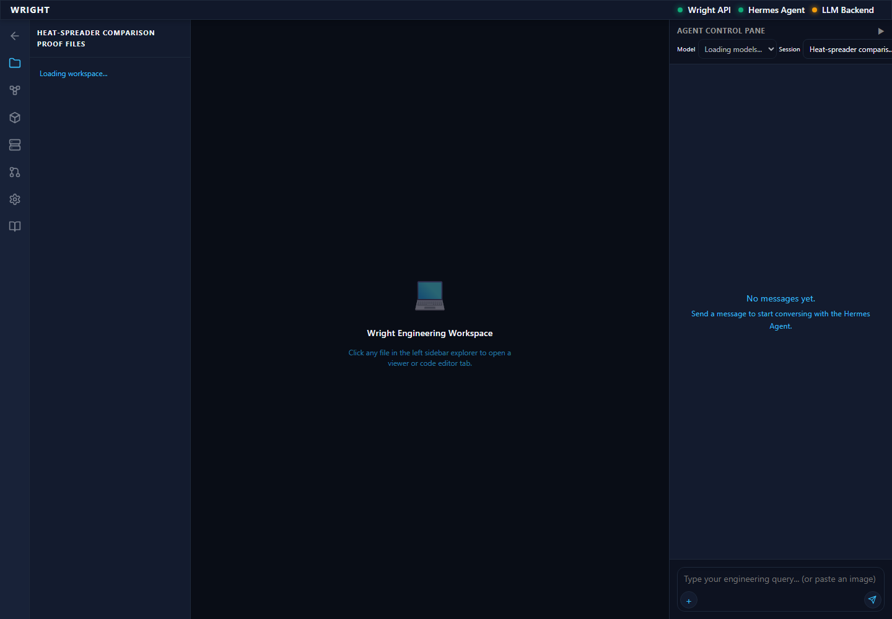
annotated 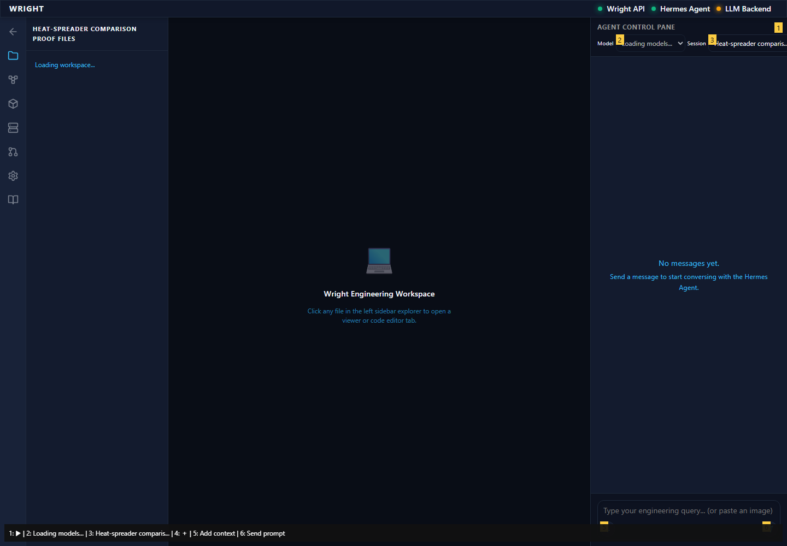
Workflow file menu and editor open within the installed workspace.
Expected: Existing editor in workspace.
Actual: Workflow file menu and editor open within the installed workspace.
raw 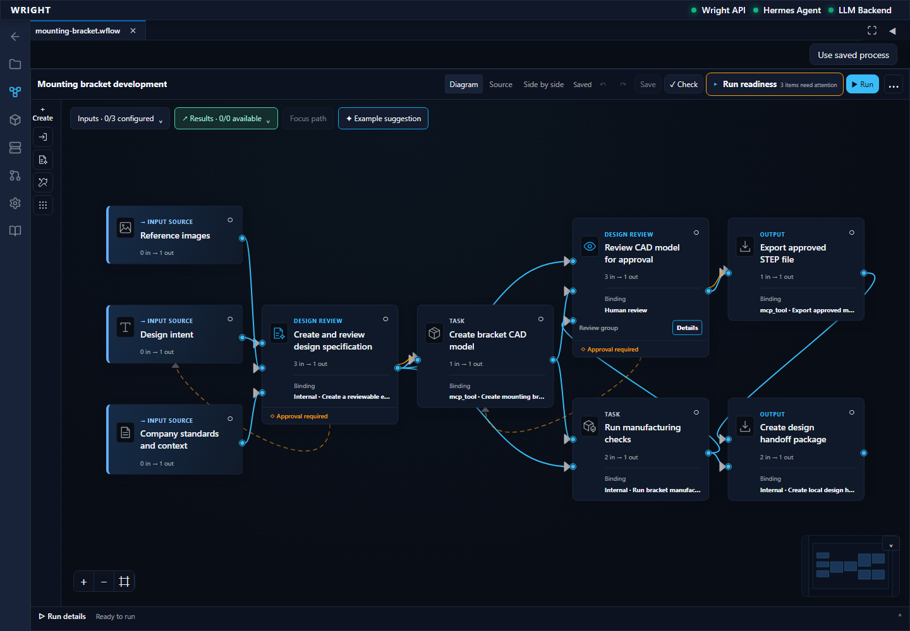
annotated 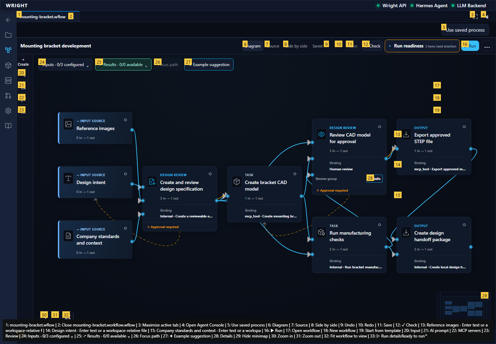
Accepted wheel workflow appears in the installed file chooser.
Expected: Exact accepted wheel source offered.
Actual: Accepted wheel workflow appears in the installed file chooser.
raw 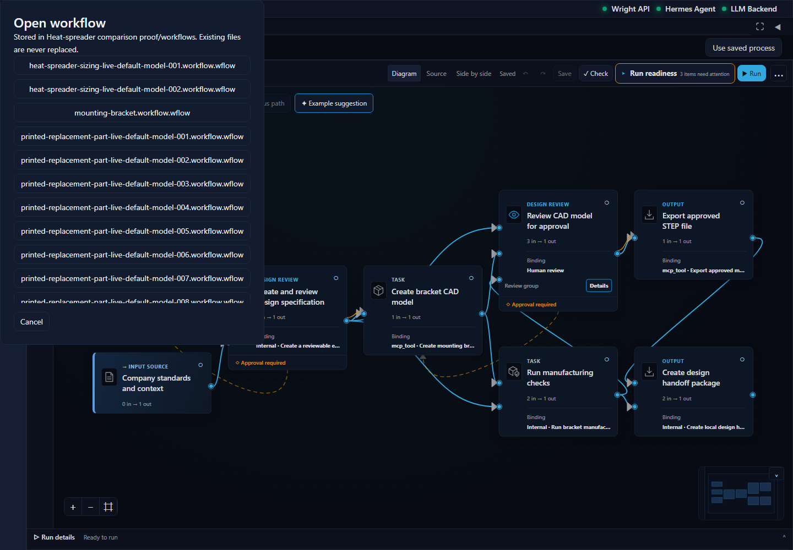
annotated 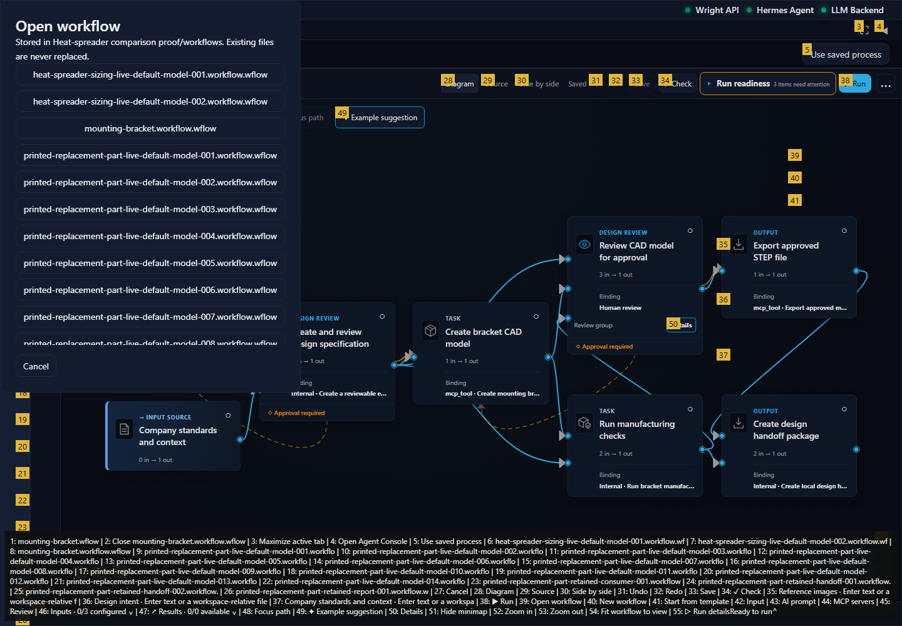
The original review/repair/slice source is open with Use saved process enabled.
Expected: Same accepted source in diagram and working view.
Actual: The original review/repair/slice source is open with Use saved process enabled.
raw 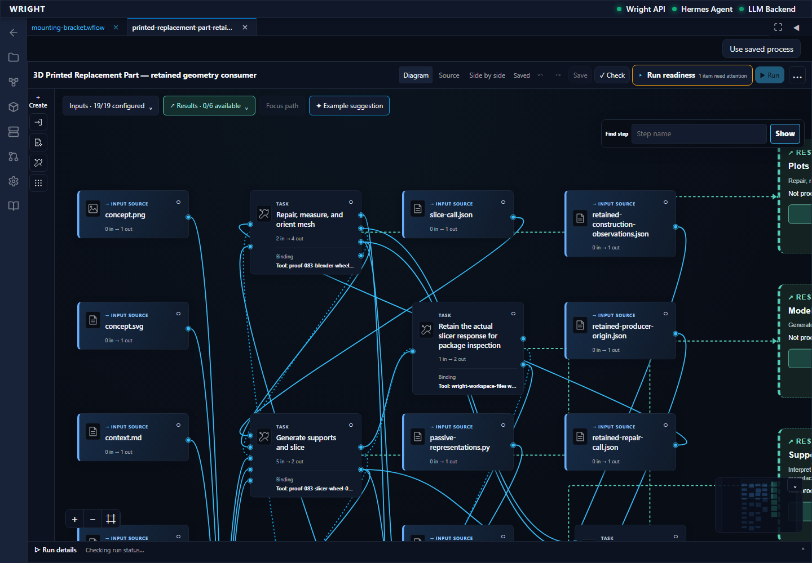
annotated 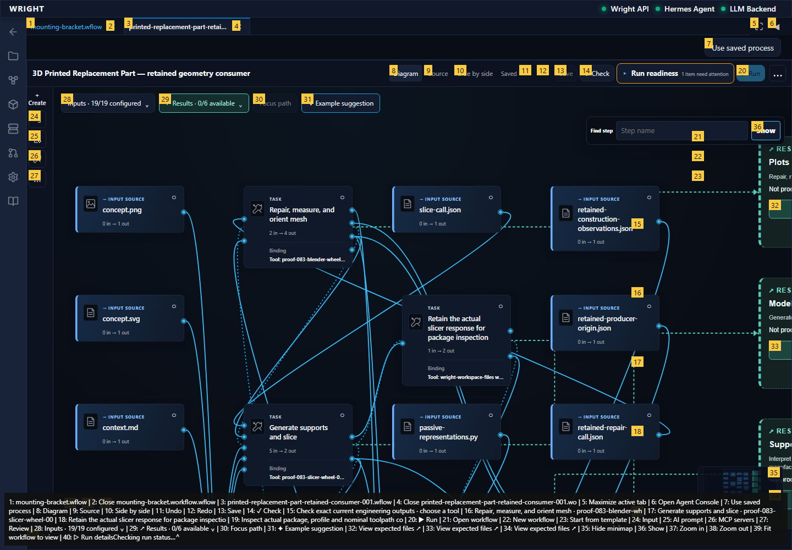
Installed shared common view opens without starting another run.
Expected: Common view opens as a workspace tab.
Actual: Installed shared common view opens without starting another run.
raw 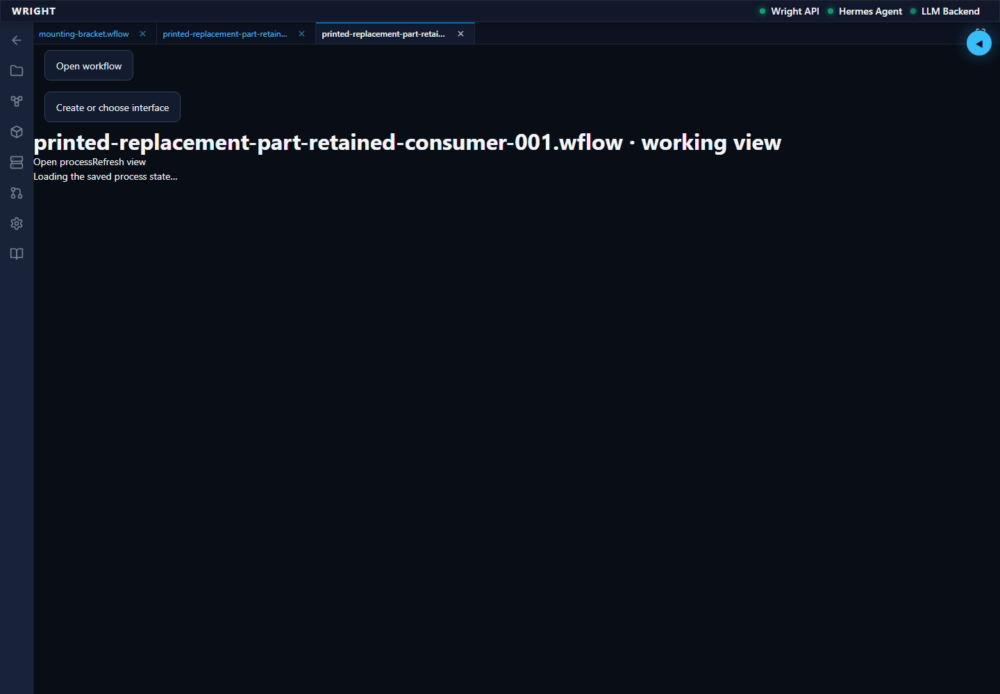
annotated 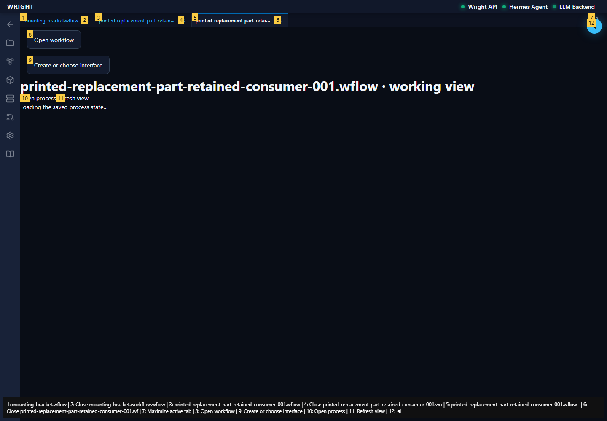
Common view shows the same second run and pending geometry-basis review.
Expected: Existing second run remains at its declared review.
Actual: Common view shows the same second run and pending geometry-basis review.
annotated 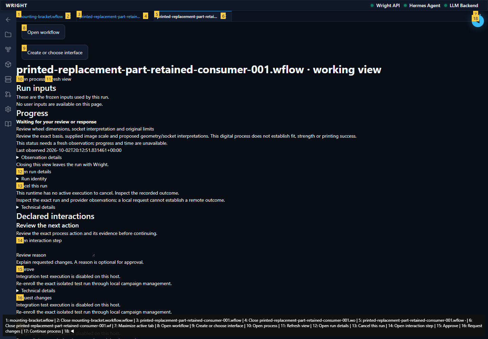
expect(locator).toBeVisible() failed Locator: getByLabel('Saved interface', { exact: true }) Expected: visible Timeout: 5000ms Error: element(s) not found Call log: - Expect "to.be.visible" with timeout 5000ms - waiting for getByLabel('Saved interface', { exact: true })
Expected: Installed common/saved journey remains usable.
Actual: expect(locator).toBeVisible() failed Locator: getByLabel('Saved interface', { exact: true }) Expected: visible Timeout: 5000ms Error: element(s) not found Call log: - Expect "to.be.visible" with timeout 5000ms - waiting for getByLabel('Saved interface', { exact: true })
annotated 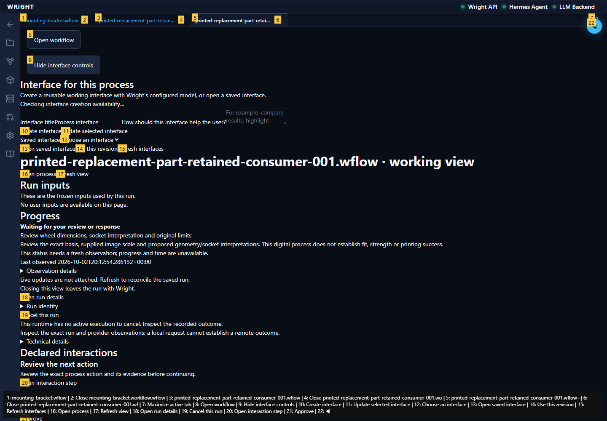